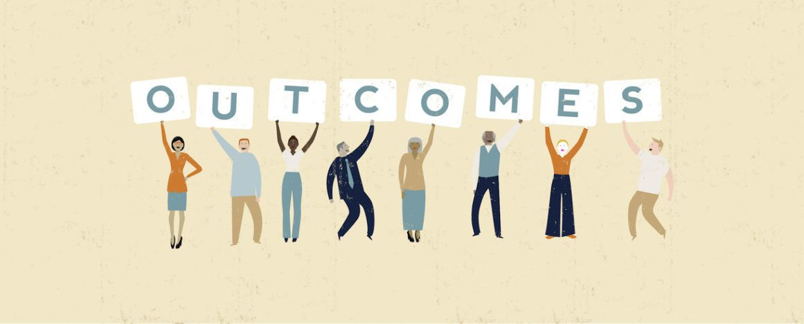

Para poder medir nuestros resultados, necesitamos medir la cantidad de personas que utilicen la plataforma, al igual que contar de todos los proyectos, cuantos llegaron a completar el proceso desarrollar su proyecto.
Otra medida para poder cuantificar los resultados es a traves de reviews con el sistema de estrellas y comentarios.
Outcomes
Lo que se busca a traves de esta plataforma es que los emprendedores de StartUps tengan una guía para el desarrollo de sus proyectos, la cual sigue al diseño interactivo como metodología. Esto con el fin de que las ideas se puedan
concretar y los proyectos se lleven a cabo correctamente, sin necesidad de estudiar estas metodologías. En otras palabras, se ofrece algo similar a un template de cómo empezar cualquier tipo de proyecto.

Assumptions
Lo que el cliente quiere es poder concretar y llevar acabo aquellas ideas de negocio, inovacion, etc.
Lo que le gusta al cliente es la accesibilidad a la herramienta.
El cliente desea una mayor velocidad y simplicidad de desarrollo.
El cliente prefiere seguir una metodología ya comprobada, a tener que implementar todo por su propia cuenta.
Hypothesis
Crear la infraestructura para que el cliente no se tenga que preocupar por la metodología a seguir para desarrollar su proyecto. Es decir manejar y guiar el proyecto del cliente, ofreciendo una metodología confiable y rapida.
Creamos una página web en la que el cliente puede acceder en cualquier momento que necesite, de tal manera que la pueda compartir con otros involucrados en el proyecto y/o también con conocidos que deseen emprender.
Design It
Utilizamos menores patrones para guiar la navegación del usuario, de tal manera que pueda acceder a los recursos que consideramos que el cliente tiene que ver, sin la necesidad de generar una experiencia negativa de nuestra página.
MVP
Los elementos esenciales para la creacion del MVP deben ser:
Página de login del usuario
Página con tus proyectos, tu informacion y usuario
Página donde se defina la metodología de Diseño interactivo.